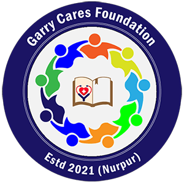
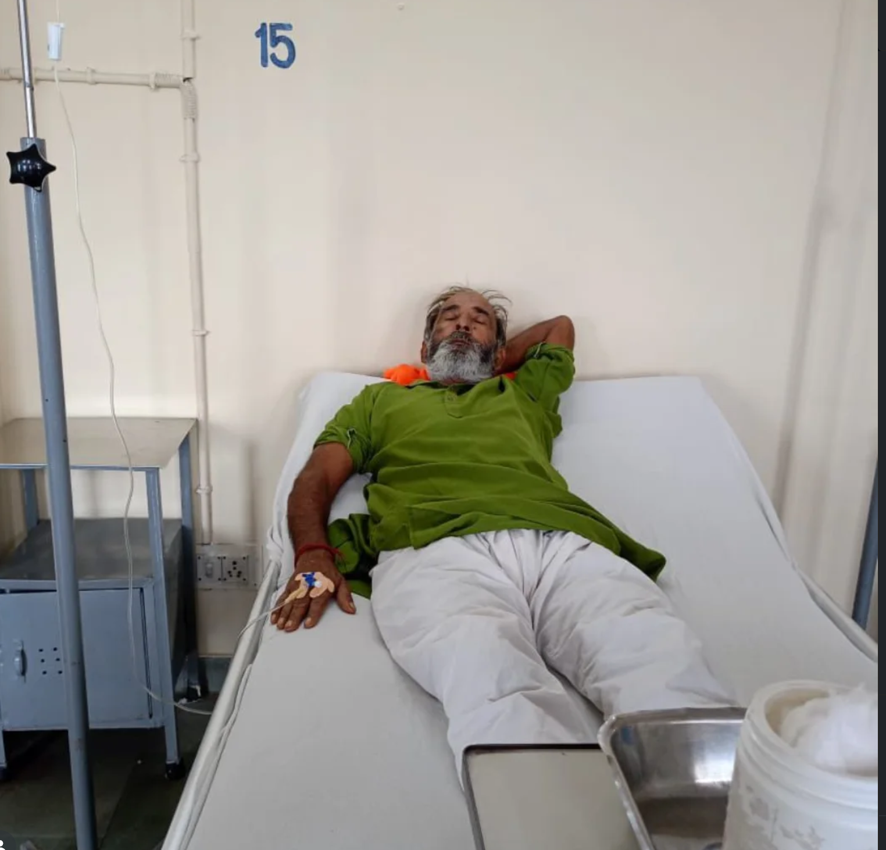
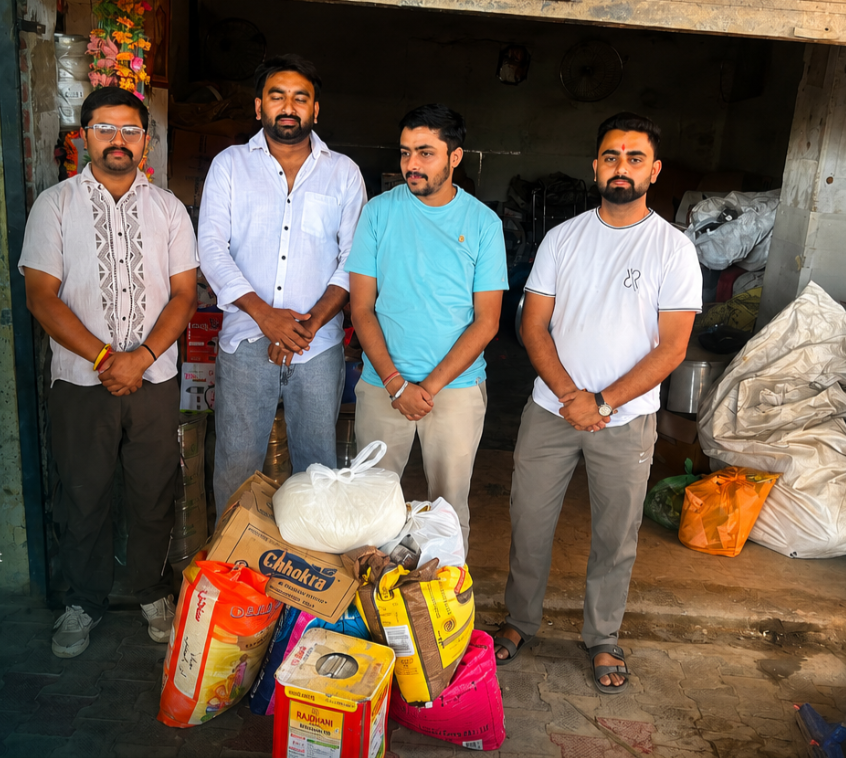
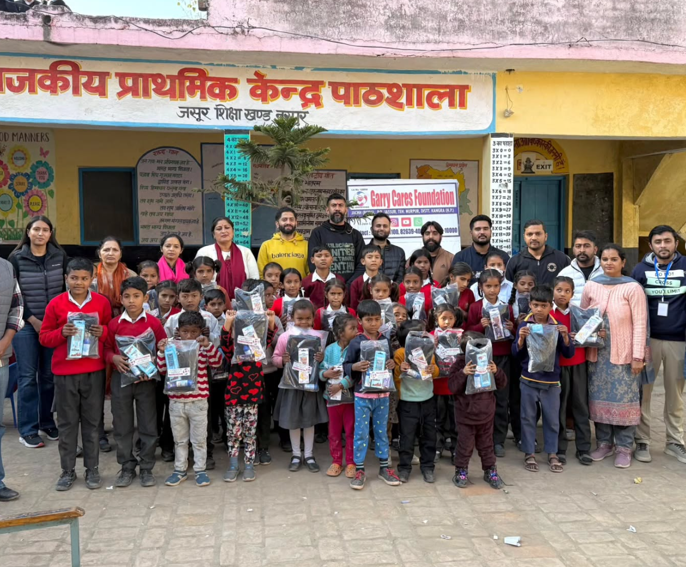
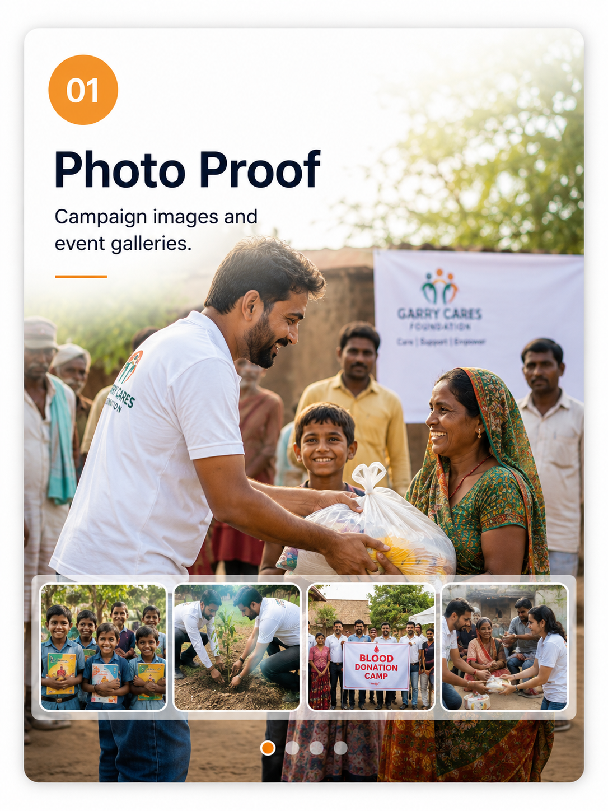
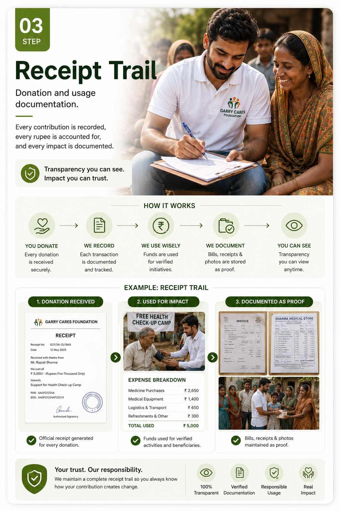
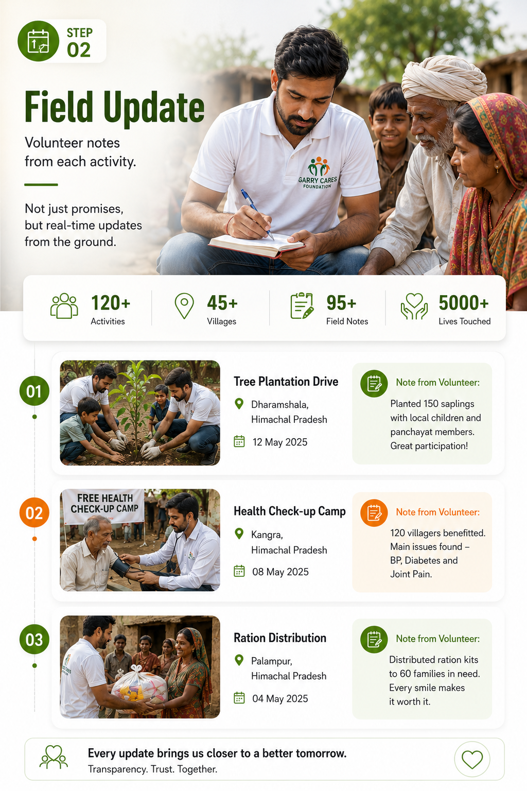
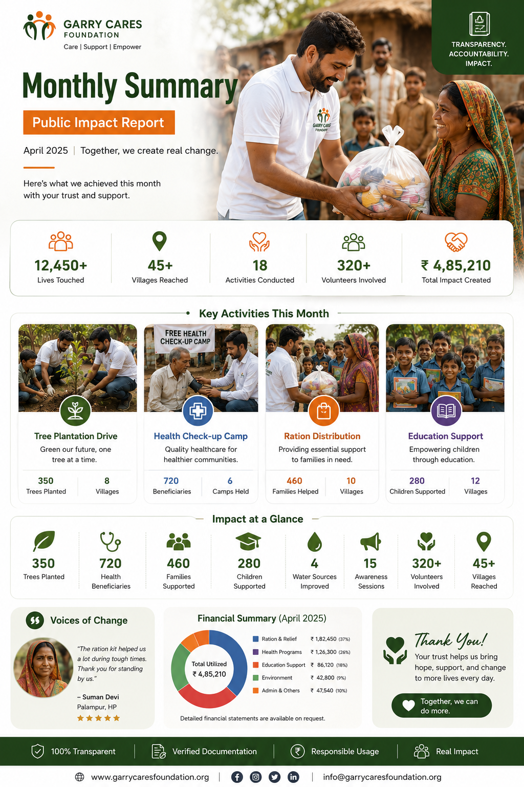

Patients supported
Medical camp assistance, emergency guidance, health awareness and family coordination.

Garry Cares FoundationHumanity in action Support NowImpact report 2025-26
Clear numbers, human stories and transparent proof show how community support is reaching families across healthcare, dignity, education and rural welfare.
Headline numbers
Each number represents direct support delivered through local action and community participation.
Medical camp assistance, emergency guidance, health awareness and family coordination.
Mission Kanyadaan and wedding essentials support for daughters from families in need.
Health camps, awareness drives, donation activities and rural community engagement.
Study support, computer education, learning material and confidence-building assistance.
Impact in action
These stories show how the foundation's work moves from a real need to verified support, field action and visible community care.

Patient care supportMedical assistance, camp activity and emergency coordination helped families receive support without feeling alone.

Mission Kanyadaan supportFamilies were supported with dignity-focused help, essentials and community care during important life moments.

Student education supportLearning help, computer exposure and student support created small but meaningful steps toward opportunity.
Impact journey
Foundation or volunteers identify a genuine case through local community channels.
Basic documents, family situation and urgency are reviewed before support is planned.
Help is given through campaign-wise assistance, volunteer action or partner coordination.
Photos, notes, receipts and updates help maintain transparency and donor confidence.
Donor confidence
Campaign proof, receipts, volunteer notes and monthly summaries help donors see how their support is used.

Photo proof Campaign images and event galleries.
Receipt trail Donation and usage documentation.
Field update Volunteer notes from each activity.
Monthly summary Public impact report for supporters.Be part of the next story